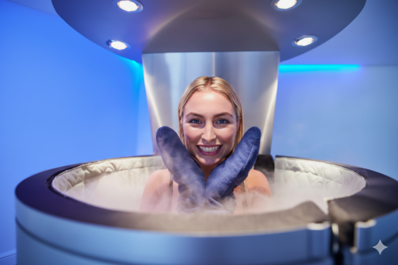

Whole body cold therapy — 0°F to -220°F — THRIVE Tech supervised for your safety
Whole body cryotherapy exposes your body to extreme cold — 0°F to -220°F — for a controlled 2–3 minute session. The rapid cold triggers a powerful physiological response: reduced inflammation, accelerated recovery, increased energy, and elevated mood.
At THRIVE 4 Peak Performance, before anyone can have a 2–3 minute session, they must be screened by our clinical professionals (GFE) and signed off by our Medical Director to avoid any contraindications.
Why elite athletes and everyday performers choose cold therapy
Cold exposure triggers a powerful anti-inflammatory response throughout the entire body — reducing chronic inflammation that drives pain, fatigue, and metabolic dysfunction.
Speeds muscle repair after intense training, reduces lactic acid buildup, and provides lasting relief from chronic joint pain — without pharmaceuticals or their side effects.
The cold shock stimulates your body's natural energy systems — most clients walk out feeling alert, refreshed, and ready to perform at their peak.
Cryotherapy triggers a significant release of endorphins and norepinephrine — improving focus, emotional resilience, and overall sense of wellbeing.
From walk-in to walk-out in under 30 minutes
Our clinical team reviews your health history to confirm cryotherapy is appropriate. You'll change into minimal, dry clothing — we provide gloves, socks, and slippers. The whole prep takes about 5 minutes.
You step into the chamber as nitrogen vapor brings the temperature to between -200°F and -300°F. A team member remains with you and monitors throughout. Most people find it invigorating rather than uncomfortable — you're never alone.
You'll feel warmth returning within 30–60 seconds of stepping out, along with an endorphin-driven energy boost. You can go straight back to your day — no downtime, no recovery period needed.
Medical screening is required before your first session — we'll confirm eligibility at your consultation.
We offer single sessions as well as package programs. For chronic inflammation, injury recovery, or performance optimization, our physician will design a protocol with frequency and duration matched to your goals. Call us or book online — we'll get you scheduled within 48 hours.
Located at 3568 Old Milton Pkwy, Alpharetta, GA — one mile east of Avalon. Serving Alpharetta, Milton, Roswell, Johns Creek, and Cumming.
Between -200°F and -300°F (-130°C to -185°C) using nitrogen vapor. Sessions are 2–3 minutes — enough to activate the therapeutic response without any risk to skin tissue.
Many patients feel benefits after just one session. For chronic inflammation or performance goals, a series of 5–10 sessions over 2–4 weeks typically produces the strongest cumulative effect. Our physician will tailor a recommendation to your situation.
Yes — when properly supervised. At THRIVE, all sessions are monitored by our clinical team, and every new patient is screened for contraindications. We don't let people step in without understanding their health history first.
Minimal, dry clothing — shorts or a swimsuit for maximum exposure. We provide gloves, socks, and foot protection. No wet clothing or metal jewelry allowed in the chamber.
The cryo session itself is 2–3 minutes. Total time in the clinic, including prep and check-in, is under 30 minutes. It fits easily into a lunch break or before/after work.
Absolutely. Cryotherapy pairs especially well with compression therapy (immediately after for drainage), red light therapy (for cellular recovery), and IV therapy (for systemic anti-inflammatory support). Our physician can design a combined protocol for your goals.
Free consultations available. Most appointments scheduled within 48 hours.
Book Free ConsultationOr call us at (470) 359-6195